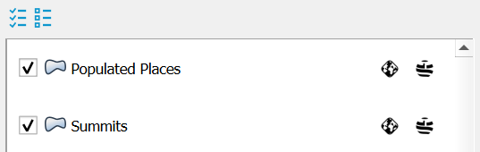
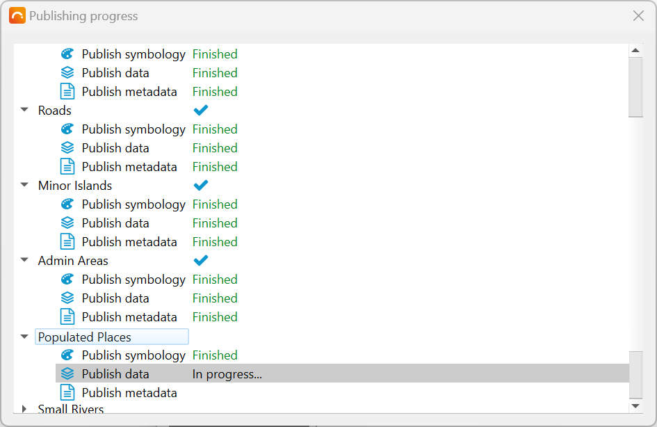
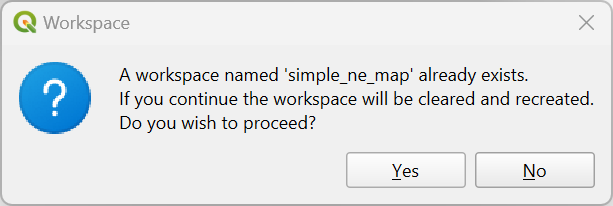

Publishing Data
Supported layer types
GeoCat Bridge supports the following layer types:
Vector layers from any spatial data source
Raster layers from any spatial data source
Layer groups
Note
You may experience that even if your layer is of one of the types listed above, Bridge still does not seem to support it. This could be the case if:
The layer data source is non-spatial (e.g. a CSV)
The layer does not have a CRS (coordinate reference system) or it is invalid
The layer is corrupt for some reason
The layer is temporary (i.e. stored in memory)
The layer is a web map layer (e.g. WMS)
In most of the cases you should be able to easily fix these issues, for example by exporting the layer, assigning a spatial reference etc. etc.
How to publish
If you wish to publish data online, you will first need to set up one or more server connections. Please see ref:ServerConnections for more information on how to add these. Then come back to this page to continue the publication process.
In the Bridge dialog, navigate to the Publish section.
Here you can choose the supported layers that you wish to publish, by (un)ticking the checkboxes for each layer:
If you click on one of the layers in the Layers panel, you can see that the Metadata and Attributes tabs on the right side update their contents based on the currently selected layer. This will allow you to:
Edit the layer metadata (see Metadata Editing)

Select the attributes (fields) to publish as part of the map service. Attributes can only be selected for vector data.
Once you have finished configuring the properties for all map layers that you wish to publish, please select the destinations server(s) that you would like to use in the Online tab at the bottom, or specify the things you wish to export to a local file on the Offline tab.
When publishing online, you can publish your layers to a geodata server, their metadata to a metadata server, or both in one go. Those servers must be selected from the two available drop-down lists in the Online tab. As mentioned before, these servers should be added beforehand in the Servers section of the Bridge dialog, as described in Server Connections.
Note
If you are publishing layers to GeoServer, the destination workspace name will be taken from the QGIS project name. Therefore, it is important that you save your work before publishing it to GeoServer. Bridge will warn you if the current QGIS project has not been saved yet.
When a geodata or metadata server is selected and there are issues connecting to it, the server drop-down list will show a red border around it and an error message may be shown at the top of the Bridge dialog (e.g. bad credentials). Please go to the Server Connections section to fix the issue(s).
Once you have selected the layers you wish to publish and the destination(s) have been set, click on the Publish button to start the publication process. Note that the Publish button is context-aware, meaning that when the Online tab is active, the data will be published online only.
Alternatively, if the Offline tab is active and the Publish button is pressed, the data will only be published offline. Please see Export files and Removing geodata and metadata as well.
Tip
During the publication process, a progress dialog is shown. This may only show up briefly if there is little data to publish:
Once the publication process has finished, a result dialog is displayed:
If there are any warnings or errors, there will be a little warning sign button in the layer result field. Click on this button to open another dialog that will display all the warning or error messages for each layer.
Warning
It is currently not possible to add layers to an existing workspace.
Each time you publish layers to an existing GeoServer workspace, all data in that workspace will be removed. Bridge will warn you if this is about to happen:
If you do not want to clear the entire workspace, you could save your QGIS project under a different name and re-publish the layers. This will create a new workspace on the server and keep the old one.
View published layers on server(s)
The context menu in the layers list provides quick access to view the published data on the server(s):

View metadata: If the metadata is already published to a catalog server, this option opens a browser to show the metadata from the server.

View WMS layer: Opens up a layer preview page for the selected map server with the selected layer.
View all WMS layers: Opens up a layer preview page for the selected map server with all published layers in the map project (i.e. GeoServer workspace).

Removing geodata and metadata

Warning
Export files
To export your (meta)data and/or style files locally, use the Offline export tab in Bridge. The offline export functionality makes it possible to export symbology in the following formats:
SLD (XML)
GeoStyler (JSON)
Mapbox GL style (JSON)
Metadata will be exported to the ISO19319 XML format.

Select a folder and the corresponding files will be created in it for all the current selected (checked) layers when you click the Publish button.